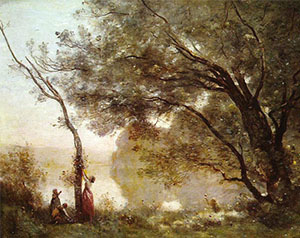

Утро
Надо отметить сразу: полотно настолько старо, что даже на фото видно как краска немного обветшала...
Воз сена
Центральное место в его пейзажах занимают люди, однако большая роль отводится природе...
Купание Дианы
Художнику удалось решить сложную задачу сочетания черт классицизма, романтизма и реализма....

Воспоминание о Мортфонтене
«Воспоминание о Мортфонтене» - самая известная картина, написанная по памяти...
Венеция
Работа создана во время одного из визитов художника в Италию. Перед зрителем пустая набережная...
Порыв ветра
В картине «Порыв ветра» с ее мрачным небом, несущимися темными тучами...
Церковь в Марисселе
Работа выполнена в эпоху творческой зрелости мастера, когда художник мог себе позволить творить...
Мост в Нарни
Картина написана в сентябре 1826 с натуры во время поездки художника в Италию...